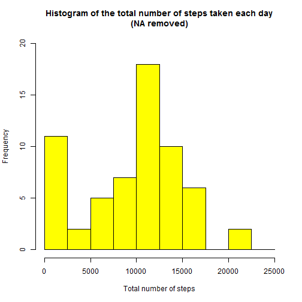
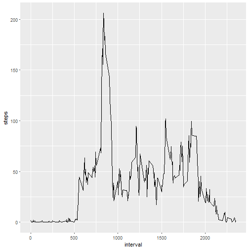
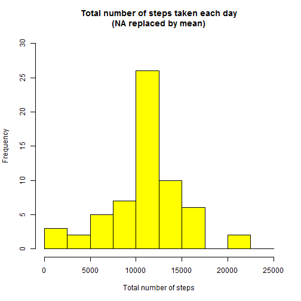
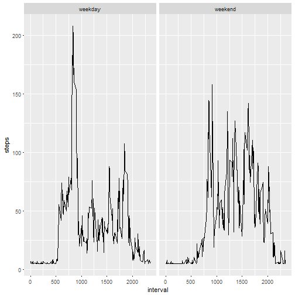

First we need to load csv file in data variable (Reader should set working directory before starting):
setwd("F:/Online Courses/Reproducible Research/Porject 1/repdata_2Fdata%2Factivity")
data<-read.csv("activity.csv")
Change date format into date
data$date<-as.Date(data$date)
Histogram of total number of steps taken on each day is shown below:
sum_steps<-aggregate(data$steps,by=list(data$date),FUN=sum,na.rm=TRUE)
hist(sum_steps$x,
breaks=seq(from=0, to=25000, by=2500),
col="yellow",
xlab="Total number of steps",
ylim=c(0, 20),
main="Histogram of the total number of steps taken each day\n(NA removed)")

Mean and median number of steps taken each day
mean(sum_steps$x)
## [1] 9354.23
median(sum_steps$x)
## [1] 10395
Time series plot of the average number of steps taken
avg_steps<-aggregate(data$steps,by=list(data$interval),FUN=mean,na.rm=TRUE)
colnames(avg_steps)<-c("interval","steps")
library(ggplot2)
## Warning: package 'ggplot2' was built under R version 3.3.2
ggplot(aes(x=interval,y=steps),data=avg_steps)+geom_line()

The 5-minute interval that, on average, contains the maximum number of steps
avg_steps[avg_steps$steps==max(avg_steps$steps),1]
## [1] 835
Calculate and report the total number of missing values in the dataset (i.e. the total number of rows with NA's)
sum(is.na(data$steps))
## [1] 2304
Replace NA values with the mean of the steps
data$steps[is.na(data$steps)]<-mean(data$steps,na.rm=TRUE)
Here are some rows of new data set
head(data)
## steps date interval
## 1 37.3826 2012-10-01 0
## 2 37.3826 2012-10-01 5
## 3 37.3826 2012-10-01 10
## 4 37.3826 2012-10-01 15
## 5 37.3826 2012-10-01 20
## 6 37.3826 2012-10-01 25
Histogram of total number of steps taken on each day is shown below:
sum_steps<-aggregate(data$steps,by=list(data$date),FUN=sum,na.rm=TRUE)
hist(sum_steps$x,
breaks=seq(from=0, to=25000, by=2500),
col="yellow",
xlab="Total number of steps",
ylim=c(0, 30),
main="Total number of steps taken each day\n(NA replaced by mean)")

Mean and median number of steps taken each day after replacing NA values with mean
mean(sum_steps$x)
## [1] 10766.19
median(sum_steps$x)
## [1] 10766.19
Panel plot comparing the average number of steps taken per 5-minute interval across weekdays and weekends
# Convert date into weekdays
data$days=tolower(weekdays(data$date))
#Now categorised days into weekend and weekdays
data$day_type<-ifelse(data$days=="saturday"|data$days=="sunday","weekend","weekday")
#Take mean steps taken on weekend or weekday in the intervals
avg_steps<-aggregate(data$steps,by=list(data$interval,data$day_type),FUN=mean,na.rm=TRUE)
colnames(avg_steps)<-c("interval","day_type","steps")
# Create panel plot between average steps and interval seperated by day type
ggplot(aes(x=interval,y=steps),data=avg_steps)+geom_line()+facet_wrap(~avg_steps$day_type)
